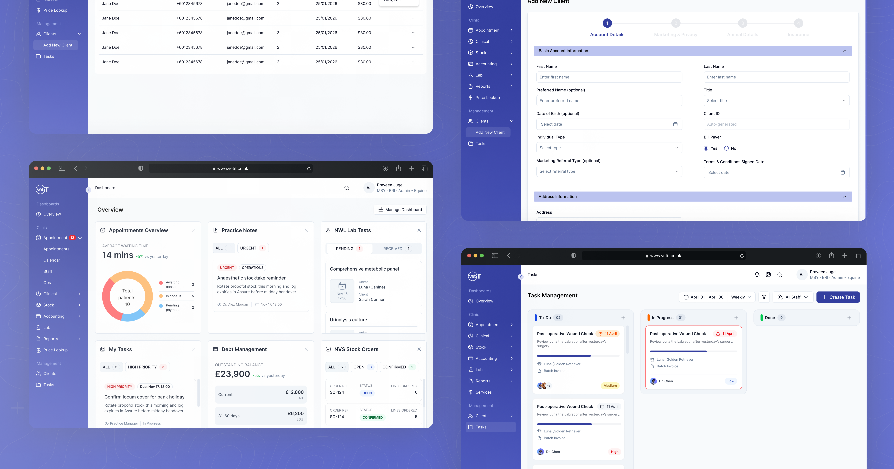

VetIT — Uncovering a Better Experience
A focused UX audit uncovering usability and accessibility issues across the VetIT experience, with practical recommendations to create a clearer, more efficient, and user-friendly system.

This is a conceptual project, not an official redesign of the VetIT website. The aim was to identify potential usability issues and propose simplified solutions. Undertaken by a team of six UI/UX designers, the initiative was carried out purely for learning and skill development.
Four lenses on one system.
VetIT is a veterinary practice management platform: appointments, clients, tasks, stock, and accounting in one workspace. Rather than reacting to what looked wrong, we audited it through four deliberate lenses, then synthesised the findings into recommendations and redesign concepts.
{{ l.body }}
Eight passes over the same system.
{{ p.body }}
Dashboard
The daily overview: waiting times, practice notes, lab tests, tasks, and debt in one grid. Six panels competing for the same glance.
{{ r.body }}
Appointments
Eleven pages of calendars, timelines, and a day book: the busiest surface in the product, and the one carrying the most duplicated function.
{{ r.body }}
Add New Client
Fourteen pages and six steps to register one client: the longest single flow in the audit, and the clearest candidate for compression.
{{ r.body }}
Tasks
A three-column board carrying the team's workload, where colour was doing all the work that hierarchy should have been doing.
{{ r.body }}
Participants consistently described the redesign as easier to navigate, less cognitively demanding, and a better overall experience. These were reported impressions rather than directly measured outcomes, but the consistency of the feedback reinforced the direction.
Participants who used the current system first were naturally slower when moving to the redesign. The preference held regardless of the order in which they used the two systems.
Conceptual academic project · Not affiliated with or endorsed by VetIT
Available for full-time Product Design roles.
Looking for a team building something that has to hold up, where research, systems and craft are treated as the same job.
Every step reveals something new